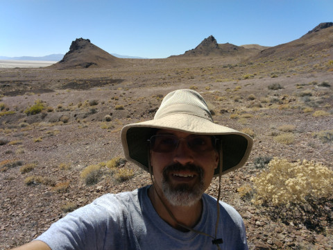
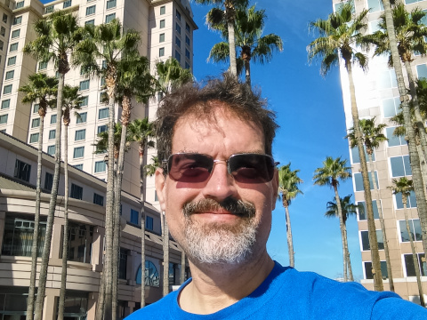
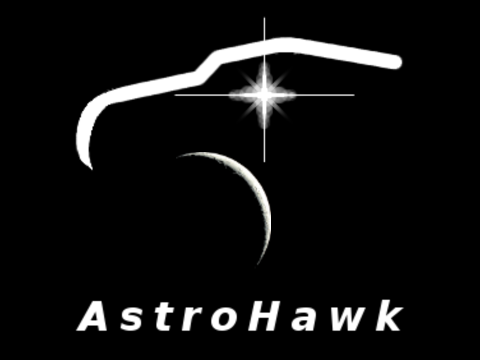
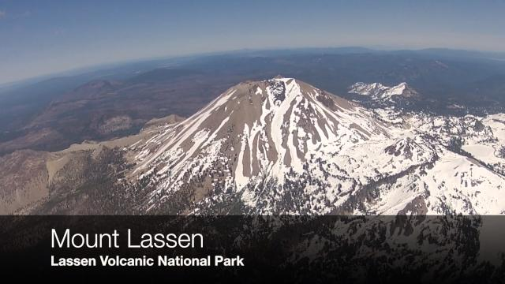

This page describes how I use various social media networks.
Twitter & Mastodon 
I've always had parallel interests in various aspects of technology and flight. But it didn't take long to notice that on social media, people who come for one of my interests don't always share others. So on Twitter I split up my social media presence into multiple accounts for my primary interests. Later when Twitter began its rapid downturn in late 2022, I added corresponding accounts on Mastodon.
The accounts are:
- @ikluft - aviation, science
- @KO6YQ - technology, local
- @AstroHawk - space, rockets, satellites, astronomy
When a topic straddles more than one of my topics, I'll post it from the account which is best associated with the topic and retweet/boost it from the other(s).
These accounts are all genuinely me, just covering different topics from my interests.
Mastodon verification ✅
On Mastodon, this page provides link verification for my accounts. I indicate that with a green checkmark ✅ on each of my accounts. But the actual verification is the green checkmarks Mastodon shows on my user profiles indicating this page linked to them as mine.
Parody of the Twitter icon
What's up with the strange Twitter icon? It's a parody of the Twitter logo patterned after their turmoil that started in 2022 with a change of manegement. It's turned around, turning red and has a longer beak like Pinnochio's fabled nose. 😀 That seemed representative of what happened with Twitter, at least to an outside observer. Other than that, curves look enough like Twitter's logo to recognize it. But it's missing details. Yes, I drew this parody icon - please include attribution to me if you use it.
@ikluft

Image: my @ikluft profile image shows me at Black Rock Desert, Nevada
with hills I nicknamed "Martian Buttes" in the background
Topics: aviation, science
Twitter : @ikluft (since 2009)
Mastodon  : @ikluft@avgeek.social (since 2022)
: @ikluft@avgeek.social (since 2022)
My original Twitter account is @ikluft. When I was appointed to the San Jose Airport Commission by the SJ City Council in 2010, I made the @KO6YQ account to split away technology and local (such as cycling) topics.
@KO6YQ

Image: my @KO6YQ profile image shows me at Circle of Palms Plaza in downtown San Jose,
which is the historical marker for California's first state capital
Topics: technology/communications (computing, open source software, networking, Ham Radio)
and local (news, cycling)
Twitter : @KO6YQ (since 2010)
Mastodon  : @KO6YQ@sfba.social (since 2022)
: @KO6YQ@sfba.social (since 2022)
My @KO6YQ account covers technology topics and local topics. Technology interests include Internet, cybersecurity, Open Source software and Ham Radio. Local topics can be any relevant news in San Jose, but also cycling topics and pictures from bike rides. It's the catch-all topic making it more of the personal account when other topics don't fit.
@AstroHawk

Image: my @AstroHawk profile image has a crescent Moon image, the Sun with lens flare,
and line art to bring them together to look like a hawk
Topics: space, NewSpace industry, rockets, satellites, astronomy
Twitter : @AstroHawk (since 2010)
Mastodon  : @AstroHawk@spacey.space (since 2022)
: @AstroHawk@spacey.space (since 2022)
@AstroHawk was originally an anonymous account. But in reality it hardly ever got used. In 2022, I decided to de-anonymize it and split space topics from my @ikluft account to it. That transition is still in progress. So often the space tweets/posts from @AstroHawk are rewtweeted/boosted from @ikluft where a lot of followers came looking for that.
YouTube 

I'm @ikluft on YouTube. I post videos on YouTube with flying, cycling, local info and some experiments.
It includes my "Scenic Hop flying videos" series taken while flying airplanes, showing the whole flight in time-lapse so you can see as if you came along. In one of the videos, "Flying over Mount Lassen", a frame from it here is from when I flew a Cessna 172 up to 12,000ft/3660m to get video looking down at 10,457ft/3187m Mount Lassen in May 2014, 100 years after its 1914-1917 eruption began.
I'm u/KO6YQ on Reddit.
LinkedIn 
My LinkedIn profile is private. Connections are available to people I know or have worked with online.
Other social media 🤪
I was on Facebook starting in 2008 until I decided to delete it in 2016. Since then, I do not use any Facebook/Meta-owned social media.
It took 2 years to get Facebook to honor my repeated requests to delete my account. When permanent deletion requests kept failing, I opted for temporary deactivation each time. My complaints and attempted bug reports never got a response. I would always find they had reactivated my account without my authorization when I came back every 6-8 weeks to try again. Finally when the news media exposed a bug that was crashing their account deletion process, I was able to delete it in 2018. They didn't care until they got bad press.
When it takes 2 years to get out, you'd never consider going back. Don't even bother asking. It won't happen.
Attributions
I made the icon which is a parody of Twitter's logo, except turned around, turning red and with a long
beak like Pinnochio's nose.
The Mastodon icon came from Mastodon.
The YouTube, Reddit and LinkedIn icons are public domain replicas from Wikimedia Commons,
based on graphical shapes too simple for trademark.